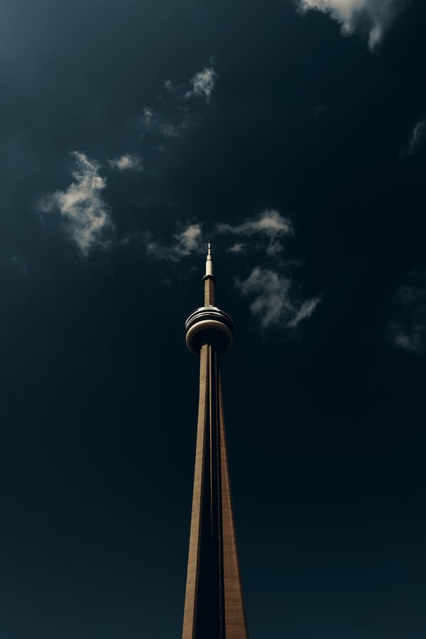

.jpg)
Toronto : Endroits à visiter
Tour du CN
La tour CN fait partie des sept merveilles du monde moderne, selon l'American Society of Civil Engineers. Elle appartient aussi à la Fédération des grandes tours du monde
La Casa Loma
Casa Loma témoigne d’une combinaison de styles architecturaux propres à l’esprit éclectique de l’époque de sa construction 5,14. Conformément à la volonté de Sir Henry de faire édifier un « château d’influence classique et médiévale »12, l’architecte s’inspira de châteaux qu’il visita en Europe lors de son voyage préalable à la conception de Casa Loma
.jpg)
Musée royal de l'Ontario
Le Musée royal de l'Ontario (en anglais, Royal Ontario Museum - ROM) est un musée de culture mondiale et d'histoire naturelle situé à Toronto. C'est le cinquième plus grand en Amérique du Nord et il contient plus de six millions d'objets.Le Musée royal de l'Ontario (en anglais, Royal Ontario Museum - ROM) est un musée de culture mondiale et d'histoire naturelle situé à Toronto. C'est le cinquième plus grand en Amérique du Nord et il contient plus de six millions d'objets

A PROPOS
Notre site web a l'ambition de vous donner l'envie à vous aussi de visiter ces endroits uniques au monde.